A strategic approach to unifying 8 program websites into a single, cohesive digital platform, organized around audience journeys, national impact, and bilingual accessibility.
8
Websites
6,400+
Total URLs
12
Content Types
EN/FR
Bilingual
Prepared forvia Attention StrategyPrepared by InklineDate February 19, 2026Proposal Due March 2, 2026
Strategic Approach
Orchestrating Eight Journeys Into One
The Rideau Hall Foundation operates 8 distinct program websites, each with its own brand presence, content model, and audience. The consolidation challenge isn't simply technical. It requires a thoughtful strategy for how diverse audiences discover, navigate, and engage with RHF's programs through a single unified platform.
Our approach organizes the consolidated site around three strategic layers: a shared brand gateway that tells the RHF story, program-specific experiences that maintain distinct identities, and cross-cutting content that showcases national impact across all programs.
Guiding principle: A visitor who arrives looking for a specific program (e.g., Catapult funding, Forum for Young Canadians) should find a clear, direct path, while also discovering the broader RHF ecosystem and its interconnected impact across Canada.
Visitor Journey Model
Every audience, from donors and program participants to educators, researchers, and alumni, follows a similar journey pattern through the consolidated site:
01
Arrive
Via search, direct URL, or referral to a specific program
02
Orient
Quickly identify the program and understand the RHF context
03
Engage
Access program content, resources, stories, and opportunities
04
Discover
Cross-program content surfaces related RHF initiatives
05
Act
Apply, donate, nominate, subscribe, or share impact
This journey model ensures legacy URLs (visitors arriving at former program domains) land seamlessly in the right program context, while the unified platform architecture encourages discovery of the broader RHF ecosystem.
Information Architecture
Proposed Navigation Structure
The consolidated site architecture uses a hub-and-spoke model: RHF serves as the central hub with each program accessible as a distinct spoke, maintaining its identity while benefiting from shared infrastructure, cross-program navigation, and a unified content taxonomy. The hub connects all 11 RHF programs, which are central to the foundation's mission.
Rideau Hall Foundation
Unified Gateway
Program Sites (7 Consolidated)
Ingenious+
Innovation challenge, submissions, entries
Catapult Canada
Learning grants, resources, grantee profiles
Forum for Young Canadians
Youth civic engagement, partners, My Canada
Leadership Canada
Conference, members, alumni, regional chairs
QE Scholars
Scholarships, university partnerships, news
Innovation Awards
GG Innovation Awards, winners, nominations
Canadian Innovation Space
Partners, resources, events
RHF Programs (On rhf-frh.ca)
Indigenous Teacher Education Initiative
Teacher education, Indigenous communities
The Michener Award
Outstanding meritorious service, recognition
Arctic Inspiration Prize
Arctic communities, innovation, sustainability
Canadian Innovation Week
National innovation celebration, events
Recommended Navigation Hierarchy
With 11 programs as the foundation's primary delivery mechanism, the navigation must make every program discoverable in one click while keeping the top bar clean. A programs mega menu organized by thematic pillars accomplishes both.
Level 1 (Primary)
Global Navigation Bar
Five primary sections provide the top-level information architecture. "Programs" opens the Level 2 mega menu; all other items link to standard landing pages.
About
Programs ▾
Impact
News
Get Involved
Level 2 (Mega Menu)
Programs Mega Menu — Thematic Pillars
"Programs" opens a full-width mega menu grouping all 11 programs into four intuitive pillars. Each program links to its own landing page with consistent sub-navigation.
Each program landing page uses a consistent horizontal sub-nav, adapted to its content type.
Overview
Apply / Nominate
Winners / Grantees
Resources
Partners
News & Stories
Why thematic pillars? 11 programs in a flat list is overwhelming. Grouping by theme (Innovation, Youth & Education, Leadership & Recognition) lets users orient by interest area first, then drill into a specific program. The fourth column ("All Programs") provides cross-cutting entry points — the impact showcase, communities map, and unified apply flow the RFP calls for.
Cross-program content strategy: A shared "Impact" section aggregates communities, winners, grantees, and alumni across all 11 programs, enabling the "innovative approach to showcasing national impact" the RFP calls for. This is powered by a unified taxonomy that tags content by program, region, theme, and pillar.
Content Inventory
What We're Working With
Our comprehensive crawl and deep content analysis across all 8 sites identified 6,400+ indexed URLs, 37 distinct content type patterns consolidating to 12 unified CPTs, and 874 pages with form integrations, representing 52% of all content. This quantifies the content migration scope and identifies the custom post type architecture needed for the consolidated platform.
All 8 sites are bilingual (EN/FR). Page counts reflect English content only. French is handled via translation plugin, not separate content.
SEO & AEO Strategy
Protecting & Growing Search Visibility
Consolidating 8 established domains into one is the most SEO-critical aspect of this project. Done correctly, it concentrates domain authority and can dramatically improve rankings. Done poorly, it risks losing years of accumulated search equity.
Domain Consolidation & Redirect Strategy
Critical: All 8 legacy domains must maintain active 301 redirects indefinitely. The redirect map covers 6,400+ URLs across all domains. Rank Math Pro handles redirects at the WordPress level, with server-level redirects as fallback.
Redirect approach per domain:
Legacy Domain
Redirect Target
rhf-frh.ca
Primary consolidated domain or /rhf/ subdirectory
leadershipcanada.ca
301 to /programs/leadership/
forum.ca
301 to /programs/forum/
catapultcanada.ca
301 to /programs/catapult/
ingeniousplus.ca
301 to /programs/ingenious/
innovation.gg.ca
301 to /programs/innovation-awards/
queenelizabethscholars.ca
301 to /programs/qe-scholars/
canadianinnovationspace.ca
301 to /programs/innovation-space/
Domain Authority Consolidation
Backlinks from all 8 domains will be consolidated into a single domain, potentially creating a much stronger authority signal. The combined backlink profile should be audited during discovery to identify high-value links to preserve and prioritize in communications with external linking partners.
Technical SEO Foundation
The consolidated site should be architected with these SEO best practices:
Schema Markup
Organization, Program, Event, Person structured data
XML Sitemaps
Per-program sitemaps via Rank Math
Canonical URLs
Prevent duplicate content across program sections
Hreflang Tags
EN/FR bilingual signals for search engines
Core Web Vitals
LCP, FID, CLS optimization via WP Engine + Elementor
Internal Linking
Cross-program content recommendations, related programs
Answer Engine Optimization (AEO)
With AI-powered search (Google AI Overviews, ChatGPT search, Perplexity) becoming a major traffic source, the consolidated site should be structured for AI consumption:
Structured FAQ content for each program (AEO-optimized Q&A)
Clear, concise program descriptions that AI can extract and cite
Schema.org markup for all structured content (programs, events, people, organizations)
Topic authority pages that establish RHF as the definitive source for each program area
Content designed for featured snippets and AI citation
AEO is no longer optional. By 2026, an estimated 40% of search queries surface AI-generated answers. The consolidated site must be built to serve both traditional search engines and AI answer engines from day one.
SEO Migration Monitoring
Post-launch SEO monitoring is essential to validate the success of the consolidation:
Google Search Console verification for all 8 legacy domains + new domain
Weekly ranking monitoring for top 50 keywords per program during first 3 months
404 monitoring and redirect chain auditing
Organic traffic comparison (pre vs. post migration) dashboards
Key Considerations
Items for Discussion
Hosting: WP Engine (Not Kinsta)
Inkline's standard hosting is Kinsta. The RFP specifies WP Engine, which is fully supported. Inkline's managed service can be adapted, or RHF manages WP Engine independently.
WPML vs. Weglot
RFP specifies WPML. Inkline recommends Weglot for simpler editorial workflow. WPML offers deeper integration, common in institutional contexts. Both fully within our capability. A discovery-phase decision.
Gravity Forms + Salesforce Integration
874 pages contain form integrations across the 8 sites. Gravity Forms provides a unified platform for all form types: applications, donations, contact, and registrations. Salesforce API integration via the Gravity Forms connector enables bi-directional CRM sync for donation tracking and lead capture.
LeadershipCanada.ca Scale
2,878 URLs (primarily member profiles), the largest site by count. Migration strategy (full CPT import vs. directory restructure) significantly impacts effort. Early discovery decision needed.
WCAG 2.2 vs. 2.1
RFP specifies 2.2 AA, which adds focus appearance (2.4.11), dragging movements (2.5.7), and target size minimums (2.5.8) beyond Inkline's standard 2.1 AA. Achievable with explicit attention during build.
Content Migration Strategy
~6,400+ URLs across all sites. 874 pages contain form integrations (52% of content), the highest-risk migration items. Deep content analysis reveals 37 CPT patterns across sites. Attention Strategy's content audit determines what migrates vs. archives vs. retires. Estimate assumes 60–70% migrated, remainder redirected.
Technical Scope
Development & Build Scope
Every item below maps line-by-line to a requirement from the RFP. Responsibility tags on each card indicate which partner leads that item. We've also added scope items beyond what the RFP explicitly requires where we believe they are essential to project success.
Inkline Inkline leads delivery
Attention Attention Strategy leads delivery
Mandatory Requirements — RFP §4.2
§4.2.1
WordPress-Based Website
Inkline
RFP requires: WordPress-based website hosted on WP Engine. Our approach: Single WordPress instance on WP Engine (production + staging environments). We build on the Hello Theme with a custom child theme, paired with Elementor Pro as the visual page builder. This gives RHF staff full visual editing control while maintaining clean, lightweight code. The plugin stack includes ACF Pro for custom fields, Crocoblock JetEngine for dynamic content, Gravity Forms for all form workflows, and Rank Math Pro for SEO management.
§4.2.2
Visual Builder / Framework
Inkline
RFP requires: Visual builder/framework (Divi, Elementor, Bricks, or equivalent) enabling staff to manage content independently. Our approach: Elementor Pro provides drag-and-drop editing with reusable templates and global widgets. We create 15–20 page templates with pre-built section blocks so staff can build new pages by assembling pre-designed components — no developer needed. Clear content structures, locked layout zones, and inline editing ensure brand consistency while giving RHF full editorial control.
§4.2.3
WCAG 2.2 Level AA Accessibility
Inkline
RFP requires: WCAG 2.2 Level AA compliance. Our approach: Accessibility is built into every template from the start — semantic HTML, ARIA landmarks, proper heading hierarchy, contrast ratios, keyboard navigation, and focus management. WCAG 2.2 adds specific criteria beyond 2.1: focus appearance (2.4.11), dragging movements (2.5.7), and target size minimums (2.5.8). We address all three explicitly during build. Automated testing via axe-core runs on every template, supplemented by manual keyboard and screen reader testing before launch.
§4.2.4
Fully Bilingual — English & French
Inkline
RFP requires: Fully bilingual site in English and French. Our approach: Full EN/FR implementation via WPML (as specified) or Weglot (recommended for simpler editorial workflow — a discovery-phase decision). All custom post types, taxonomies, menus, widgets, forms, and system strings will be translation-ready. RHF supplies French translations; Inkline configures the translation management workflow, language switcher, and hreflang tags for SEO. URL structure follows /en/ and /fr/ prefixes for clean bilingual routing.
§4.2.5
Google Analytics 4 (GA4)
Inkline
RFP requires: GA4 configuration and implementation. Our approach: GA4 property setup with custom event tracking for form submissions, downloads, video engagement, and program-specific interactions. Conversion tracking for key actions (donations, applications, nominations). Google Ads compliance and conversion import setup for any existing AdWords campaigns. Program-level content grouping so RHF can analyze traffic and engagement per program within a single GA4 property.
§4.2.6
Salesforce Integration
Inkline
RFP requires: Integration with Salesforce for marketing, development, and alumni engagement. Our approach: Gravity Forms serves as the unified form engine across all programs (applications, donations, contact, registrations). Salesforce API integration via the Gravity Forms connector enables bi-directional CRM sync for donation tracking, lead capture, and program enrollment. We migrate existing form workflows from 874 form-containing pages across the 8 sites, mapping each to the consolidated form architecture. The current Salesforce funding portal functionality is preserved and integrated into the new site's donation flows.
§4.2.7
Innovative National Impact Showcase
InklineAttention
RFP requires: Innovative approach to consolidating and communicating RHF's national impact — featuring grantees, participants, and award recipients. Our approach: A dedicated cross-program impact aggregation layer that surfaces communities, winners, grantees, scholars, and participants across all programs through a unified taxonomy. Filterable by program, region, and theme. Interactive geographic visualization showing RHF's reach across Canada. Attention Strategy defines the storytelling framework and content strategy; Inkline builds the technical architecture, dynamic templates, and interactive map components. This becomes the "connective tissue" of the consolidated site.
1. Discovery & Planning — RFP §4.3
§4.3.1.1
Project Goals, Objectives, Success Metrics & KPIs
AttentionInkline
RFP requires: Collaborate with RHF staff to define project goals, objectives, success metrics, and KPIs. Our approach: Attention Strategy leads stakeholder workshops and strategic planning sessions with RHF. Inkline participates to define technical success metrics — page load benchmarks, accessibility scores, redirect coverage rates, SEO ranking baselines, and migration completeness targets. Together, we establish measurable KPIs for both content strategy and technical performance that guide every subsequent phase.
§4.3.1.2
Comprehensive Audit & Analysis
AttentionInkline
RFP requires: Comprehensive audit and analysis of RHF's main website (structure, content, functionality, UX) and all program sites. Recommend what to migrate, consolidate, revise, or retire. Our approach: Attention Strategy leads the content and UX audit — evaluating quality, relevance, and user journeys across all 8 sites. Inkline conducts the parallel technical audit: site architectures, plugin stacks, data models, form inventories, and integration points. Combined findings inform the migrate/consolidate/revise/retire recommendations for all 6,400+ URLs. See the Content Inventory section for our preliminary audit results.
§4.3.1.3
Salesforce Needs Assessment
Inkline
RFP requires: Needs assessment for Salesforce integration (CRM and funding portal). Our approach: Inkline maps RHF's current Salesforce usage across marketing, development, alumni engagement, and the funding portal. We document existing API connections, data flows, and form-to-CRM mappings from all 8 sites. The assessment outputs a consolidated integration architecture: which Salesforce objects need web-to-lead/web-to-case mappings, which forms feed the CRM, and how the funding portal transitions to the new site.
§4.3.1.4
Site Architecture & Content Migration Plan
InklineAttention
RFP requires: Define overall site architecture, key pages and sections, and a content migration and consolidation plan. Our approach: Inkline builds the technical CPT architecture (12 content types consolidated from 37 patterns across 8 sites) while Attention Strategy defines the information architecture, navigation hierarchy, and content groupings. The migration plan addresses 6,400+ URLs — estimating 60–70% migrated, remainder redirected. We identify high-risk items (874 form-containing pages, 3,228 member profiles) and define the technical approach for each.
RFP requires: Design a modern, accessible, visually engaging WordPress website using a pre-approved visual builder/theme. Our approach: Attention Strategy leads visual design — brand expression, layout composition, and design system creation. Inkline builds the theme implementation: Hello Theme + child theme + Elementor Pro, translating approved designs into production-ready templates optimized for performance, accessibility, and editorial flexibility. Together we deliver 15–20 page templates covering all program and content types.
§4.3.2.2
Wireframes & Prototypes for Key Pages
Attention
RFP requires: Develop wireframes and/or prototypes for key pages (UX, navigation, user flow). Our approach: Attention Strategy delivers wireframes and interactive prototypes for key page types — homepage, program landing pages, impact showcase, resource library, and member/community profiles. Inkline reviews all wireframes for technical feasibility, performance implications, and CMS editability before design moves to high-fidelity mockups.
§4.3.2.3
Program-Level Branding Within Cohesive RHF Identity
AttentionInkline
RFP requires: Integrate program-level branding within individual program pages while maintaining a cohesive RHF brand. Our approach: Attention Strategy defines the per-program visual identity system — color accents, iconography, and content framing. Inkline implements this via the hub-and-spoke architecture: each program gets its own branded landing page and content area with distinct styling, while the shared header, footer, and global navigation maintain the overarching RHF identity. CSS custom properties make per-program theming systematic and maintainable by staff.
3. Development & Implementation — RFP §4.3
§4.3.3.1
Build Website — Optimized for Page Load Performance
Inkline
RFP requires: Build the website using the approved design and visual builder/theme, optimized for page load performance. Our approach: The 8 existing sites use approximately 37 distinct content patterns that we consolidate into 12 unified Custom Post Types. Each CPT has structured custom fields (ACF Pro), filterable taxonomies, and dynamic listing templates (Crocoblock JetEngine). All templates are performance-optimized: critical CSS inlining, lazy loading, image compression with WebP delivery, and database query optimization for CPT-heavy pages. The data model below shows the full proposed architecture:
Proposed CPT
Items
Source
Notes
Community
~201
rhf-frh.ca
Largest CPT; geographic/regional taxonomy needed
Submission
~196
ingeniousplus.ca
Youth innovation submissions; includes entries (16)
Partner
~138
forum.ca, canadianinnovationspace.ca
Consolidate forum-partners + innovation partners; type taxonomy
Resource
~93
catapultcanada.ca, canadianinnovationspace.ca
Combined resource library with tag/category taxonomy
Media Release
~74
rhf-frh.ca
Press releases and official statements
Grant
~73
catapultcanada.ca
Grant directory; location/audience/org-type filters
RFP requires: Ensure full compliance with WCAG 2.2 Level AA accessibility standards. Our approach: Accessibility is built into every template from the start — semantic HTML, ARIA landmarks, proper heading hierarchy, contrast ratios, keyboard navigation, and focus management. WCAG 2.2 adds specific criteria beyond 2.1: focus appearance (2.4.11), dragging movements (2.5.7), and target size minimums (2.5.8). We address all three explicitly. Automated axe-core scans run on every template, supplemented by manual keyboard and screen reader testing.
§4.3.3.3
Bilingual Implementation via WPML
Inkline
RFP requires: Implement bilingual functionality using WPML plugin (French translations supplied by RHF). Our approach: Full EN/FR implementation via WPML (as specified) or Weglot (recommended for simpler editorial workflow — a discovery-phase decision). All custom post types, taxonomies, menus, widgets, forms, and system strings will be translation-ready. Inkline configures the translation management workflow, language switcher, and hreflang tags for SEO. URL structure follows /en/ and /fr/ prefixes for clean bilingual routing.
§4.3.3.4
GA4, Conversion Tracking & Google AdWords Compliance
Inkline
RFP requires: Configure Google Analytics 4 (GA4), including event and conversion tracking, and compliance with Google AdWords requirements. Our approach: GA4 property setup with custom event tracking for form submissions, downloads, video engagement, and program-specific interactions. Conversion tracking for key actions (donations, applications, nominations). Google Ads conversion import and enhanced conversions setup ensure accurate attribution across the domain migration. Program-level content grouping enables per-program analytics within a single GA4 property.
§4.3.3.5
Staff-Manageable Content Structures & Templates
Inkline
RFP requires: Develop the site so it can be fully managed internally by RHF staff, with clear content structures and templates. Our approach: Every content type uses structured Elementor templates with pre-built section blocks and locked layout zones. Staff add and edit content through the visual editor or structured ACF field groups — no code or developer involvement needed. Reusable global widgets ensure brand consistency. Template documentation and video walkthroughs empower the RHF team to build new pages, manage programs, and publish content independently from day one.
§4.3.3.6
Innovative National Impact Showcase — Technical Build
InklineAttention
RFP requires: Implement an innovative approach to showcasing RHF's impact across Canada — integrating program-specific projects and participants. Our approach: Inkline builds the cross-program impact aggregation layer: unified taxonomy linking communities, winners, grantees, scholars, and participants across all programs. Filterable views by program, region, and theme. Interactive geographic visualization showing RHF's national reach. Monthly impact stories CPT with homepage rotation. Attention Strategy defines the content framework and storytelling approach that brings the data to life.
4. Content Enhancement & Functionality — RFP §4.3
§4.3.4.1
Content Simplification, Optimization & Migration
AttentionInkline
RFP requires: Support the simplification and optimization of existing content for web use. Migrate content from program sites. Our approach: Attention Strategy leads content simplification — editing, consolidating, and optimizing copy for the new IA. Inkline executes the technical migration: bulk content import via WP All Import or custom migration scripts, media migration covering 77MB+ of assets with HTML cleanup and image optimization. 874 form-containing pages (52% of content) are the highest-risk items and receive dedicated attention. Estimate assumes 60–70% of 6,400+ URLs migrated, remainder redirected.
§4.3.4.2
Navigation, IA & UI Improvements
AttentionInkline
RFP requires: Improve overall navigation, information architecture, and user interface to enhance usability. Our approach: Attention Strategy leads IA and UX improvements — navigation redesign, user flow optimization, and usability testing. Inkline implements the technical components: mega menus, breadcrumbs, cross-program navigation, search functionality, and responsive mobile navigation. The hub-and-spoke architecture ensures users can discover related content across programs while maintaining clear wayfinding within each program's content area.
§4.3.4.3
Monthly Impact Stories & Op-Eds Section
InklineAttention
RFP requires: Integrate a section for monthly impact stories and op-eds. Our approach: Inkline builds a new "Impact Story" CPT with cross-program tagging, featured story rotation on the homepage, and a filterable archive page. Each story links to related program content, communities, and participants — creating a narrative layer that ties the consolidated site together. Attention Strategy defines the editorial framework and publishing cadence for ongoing story creation.
§4.3.4.4
Embedded External Content (iframe)
Inkline
RFP requires: Embed and integrate external content via iframe — specifically indigenousteachers.canadiangeographic.ca. Our approach: Responsive iframe embedding with lazy loading, accessible fallback content, and CSP (Content Security Policy) headers configured to allow the specified external domain. We build a reusable Elementor widget for iframe embeds so RHF staff can add additional external content in the future without developer involvement.
§4.3.4.5
URL Redirects for Legacy Content Continuity
Inkline
RFP requires: Ensure continuity of access to legacy content through URL redirects. Our approach: 301 redirect mapping for all 8 domains covering 6,400+ URLs. Rank Math Pro handles WordPress-level redirects with server-level redirects as fallback. All legacy domains maintain active redirects indefinitely. See the SEO & AEO Strategy section for the full domain-by-domain redirect plan and migration monitoring approach.
5. Testing & Quality Assurance — RFP §4.3
§4.3.5.1
Cross-Device, Cross-Browser Testing
Inkline
RFP requires: Conduct thorough testing across devices, screen sizes, and major browsers. Our approach: Systematic testing across Chrome, Firefox, Safari, and Edge on desktop, tablet, and mobile. Responsive breakpoint verification ensures all templates render correctly from 320px to 2560px. 2–3 week dedicated QA phase before launch.
§4.3.5.2
Bug Identification, Documentation & Resolution
Inkline
RFP requires: Identify, document, and resolve all bugs or issues prior to launch. Our approach: Structured QA process with a shared issue tracker. All bugs are documented with screenshots, reproduction steps, and severity classification. Critical and high-severity issues are resolved before launch; medium/low issues are triaged and scheduled. RHF has visibility into the QA backlog throughout the testing phase.
§4.3.5.3
Validate Accessibility, Bilingual & Analytics
Inkline
RFP requires: Validate accessibility, multilingual functionality, and analytics tracking. Our approach: Accessibility validation via automated axe-core scans plus manual keyboard and screen reader testing on all templates. Bilingual QA ensures all content, forms, menus, and system strings render correctly in both EN and FR. GA4 event validation confirms all tracking fires correctly — form submissions, conversions, page views, and custom events. Redirect validation covers all 8 legacy domains with automated 301 response checking.
6. Launch & Post-Launch Support — RFP §4.3
§4.3.6.1
Launch Coordination & DNS Cutover
InklineAttention
RFP requires: Coordinate and support the launch of the new website. Our approach: Staged launch plan: final content freeze, DNS cutover for all 8 legacy domains, SSL certificate provisioning, redirect activation, and post-launch smoke testing. Inkline manages the technical cutover; Attention Strategy coordinates with RHF on communications and timing.
§4.3.6.2
Staff Training & Handover Documentation
InklineAttention
RFP requires: Provide staff training and handover documentation. Our approach: Inkline delivers video walkthroughs for technical content management workflows (adding pages, managing programs, creating impact stories, form administration, plugin usage). Written documentation covering the CPT architecture, template system, and plugin configuration. Attention Strategy provides editorial training — content guidelines, publishing workflows, and brand voice documentation.
§4.3.6.3
RHF Ownership — No Proprietary Lock-In
Inkline
RFP requires: Ensure RHF ownership of all themes, plugins, and configurations. Our approach: All theme files, plugins, and configurations are owned entirely by RHF — no proprietary lock-in. Inkline provides full source access, a complete plugin license manifest, and handover documentation. RHF can manage the site independently, engage Inkline for ongoing support, or transition to another provider at any time without restriction.
§4.3.6.4
Post-Launch Support
Inkline
RFP requires: Provide post-launch support to address any issues immediately following launch. Our approach: 4-week post-launch support period covering bug fixes, adjustments, and monitoring. Priority response for critical issues. Inkline monitors redirect performance, analytics tracking, search engine indexing, and site performance during the stabilization period. Issues are documented and resolved with full transparency via a shared issue tracker.
§4.3.6.5
Ongoing Maintenance & Support Options
Inkline
RFP requires: Outline options and pricing for ongoing maintenance and support on an as-needed basis. Our approach: Ongoing managed WordPress service available beyond the post-launch period — includes security updates, plugin maintenance, performance monitoring, uptime monitoring, and priority support. Inkline currently manages 130+ WordPress sites under similar arrangements. RHF retains full ownership and can manage independently or engage Inkline for continued service. Pricing options detailed in the Effort & Investment section.
Inkline Additions — Beyond RFP Requirements
Added
SEO Migration & Domain Authority Consolidation
Inkline
Not explicitly in RFP, but critical. Consolidating 8 established domains into one is the most SEO-sensitive aspect of this project. We include a full SEO migration strategy: 301 redirect mapping, backlink audit, domain authority consolidation, canonical URLs, XML sitemaps, hreflang tags, schema markup, Core Web Vitals optimization, and post-launch ranking monitoring across all legacy domains. See the SEO & AEO Strategy section for the complete approach.
Added
Answer Engine Optimization (AEO)
Inkline
Not in RFP, but increasingly essential. With AI-powered search (Google AI Overviews, ChatGPT search, Perplexity) becoming a major traffic source, the consolidated site should be structured for AI consumption from day one. We include structured FAQ content, Schema.org markup, topic authority pages, and content designed for featured snippets and AI citation.
Added
Performance & Security Hardening
Inkline
Not called out in RFP, but expected for a site of this scale. WP Engine provides server-level caching and CDN, but we add application-level optimization: image compression and WebP delivery, critical CSS inlining, lazy loading, database query optimization for CPT-heavy pages (especially the 3,228 member profiles), and security hardening including two-factor authentication, login rate limiting, and file integrity monitoring.
Effort & Investment
Development Estimates
Estimates represent Inkline's development and build scope as technical implementation partner. Organized to mirror the scope of work phases in §4.3 as requested in §5.2.
Deliverable
Ref
Hours
1. Discovery & Planning — §4.3
Technical Discovery & Salesforce Assessment
§4.3.1.1
12
Content Audit & Migration Analysis
§4.3.1.2
8
CPT Data Model & Taxonomy Design
§4.3.1.3
16
Technology & Plugin Requirements
§4.3.1.4
4
2. Design & Theme Development — §4.3
Theme Setup & Child Theme Configuration
§4.3.2.1
8
Wireframe & Prototype Technical Review
§4.3.2.2
4
Visual Design Implementation in Elementor
§4.3.2.3
8
3. Development & Implementation — §4.3
WordPress Setup & CPT Architecture (12 types)
§4.3.3.1
60
Gravity Forms & Salesforce API Integration
§4.3.3.2
20
Bilingual Implementation (WPML/Weglot)
§4.3.3.3
32
GA4, Event Tracking & AdWords Compliance
§4.3.3.4
12
Page Templates & Staff-Manageable Structures
§4.3.3.5
100
National Impact Showcase — Technical Build
§4.3.3.6
24
4. Content Enhancement & Functionality — §4.3
Content Migration (Technical Execution)
§4.3.4.1
60
Navigation, IA & UI Implementation
§4.3.4.2
16
Monthly Impact Stories & Op-Eds CPT
§4.3.4.3
8
External Content Embeds (iframe)
§4.3.4.4
4
URL Redirect Mapping (8 domains)
§4.3.4.5
16
5. Testing & Quality Assurance — §4.3
Cross-Device, Cross-Browser Testing
§4.3.5.1
16
Bug Identification & Resolution
§4.3.5.2
12
Accessibility, Bilingual & Analytics Validation
§4.3.5.3
12
6. Launch & Post-Launch Support — §4.3
Launch Coordination & DNS Cutover
§4.3.6.1
8
Staff Training & Documentation
§4.3.6.2
16
Post-Launch Support (4 weeks)
§4.3.6.4
20
Inkline Additions — Beyond RFP
SEO Migration & Domain Authority Consolidation
Added
16
Answer Engine Optimization (AEO)
Added
8
Performance & Security Hardening
Added
12
WCAG 2.2 AA Accessibility Compliance
§4.2.4
24
Project Management
Project Management & Coordination
Ongoing
40
TOTAL
516
$51,600
Inkline Development & Build
Based on $100/hr blended rate. Final pricing structured as package-based deliverables aligned to the scope phases above. Applicable taxes not included.
Project Timeline
Delivery Roadmap
Assumes project kickoff in April 2026. Inkline's build phase runs concurrently with design (for CPT architecture) and follows design approval for templates.
Phase 1
Discovery & Planning
4–6 weeks · Led by Attention Strategy
Technical discovery, Salesforce assessment, CPT architecture planning, content audit alignment. Inkline begins data model work in parallel.
Phase 2
Design & Wireframes
4–6 weeks · Led by Attention Strategy
UX design, wireframes, visual design. Inkline builds CPT architecture, custom fields, and taxonomies in parallel.
Technical migration of content from all 8 sites, media assets, redirect mapping, SEO preservation.
Phase 5
Testing & QA
2–3 weeks · Led by Inkline
Cross-browser/device testing, accessibility audit, analytics verification, redirect validation for all 8 legacy domains.
Phase 6
Launch & Handover
1–2 weeks · Shared
DNS cutover, staff training, documentation, video walkthroughs for content management.
Phase 7
Post-Launch Support
4 weeks · Inkline
Bug fixes, adjustments, monitoring. Ongoing managed WordPress service available. RHF retains full ownership of all assets.
Total estimated timeline: 22–33 weeks (~6–8 months from kickoff to post-launch support completion).
About Inkline
Company Profile
Who We Are
Inkline is an Ottawa-based web development and digital strategy agency founded in 2003 by Brent Martel and Kevin McKerracher. Marc Tessier joined as the third principal in 2015, strengthening the firm's back-end development and infrastructure capabilities. For over two decades we have designed, built, and maintained websites and web applications for organizations across Canada — from national non-profits and federal institutions to associations, education providers, and private-sector companies.
Our technical practice centres on WordPress at scale: custom post type architectures, advanced integrations (Salesforce, HubSpot, Marketo), marketing automation, bilingual implementations (WPML, Weglot), accessibility compliance (WCAG 2.1 AA+), and managed hosting environments. We currently host and maintain 130+ client websites.
Why Inkline for This Project
The Rideau Hall Foundation website consolidation sits squarely within our core competency: merging multiple WordPress properties into a single, bilingual, accessible, high-performance platform while preserving search equity and user experience.
With 23 years of agency experience serving national organizations, our team brings a proven track record of delivering complex, content-heavy web platforms on time and on budget. Combined with Attention Strategy's brand and UX leadership, our joint team delivers end-to-end capability without subcontracting gaps.
Partner: Attention Strategy
Attention Strategy is the strategic and creative lead on this engagement, responsible for brand strategy, UX design, wireframes, content strategy, and project orchestration. Based in Ottawa, Attention works with national brands and institutions on digital transformation projects. Inkline provides the full technical implementation layer — development, integration, migration, testing, and ongoing support — as Attention's dedicated build partner for this project.
Project Team
The People Behind the Build
Our team combines deep WordPress architecture expertise with project management discipline and front-end craft. Each member is assigned based on their strengths and this project's specific technical requirements.
Victoria King
Account Manager & Client Success Lead
Victoria is Inkline's dedicated client account manager for this engagement, serving as the primary point of contact between the RHF/Attention team and Inkline's development group. With over seven years of digital marketing and agency operations experience — including work with major brands in social media, gaming, and technology — she specializes in risk identification, milestone tracking, and ensuring deliverables stay aligned with client expectations. Victoria manages timelines, coordinates sprint reviews, and keeps communication channels clear throughout every project phase.
Brent Martel
Principal — Technical Strategy & Solutions Architecture
Co-founder of Inkline (2003), Brent has spent over two decades leading web strategy, solutions architecture, and client engagements for organizations across Canada. His expertise spans WordPress at scale, Salesforce and HubSpot integrations, marketing automation platforms, SEO/AEO strategy, and AI-driven content workflows. On this project, Brent architects the CPT data model, Salesforce integration approach, multi-domain migration strategy, and overall technical direction — drawing on 23 years of building and consolidating complex web platforms for non-profits, associations, and national institutions.
Marc Tessier
Principal — Back-End Development & Infrastructure
Marc joined Inkline as the third principal in 2015 and leads all back-end development, server infrastructure, and systems integration. With deep expertise in complex SaaS integrations, API architecture, and scalable web platforms, he has built and maintained infrastructure for 130+ client websites. On this project, Marc oversees PHP development, WordPress configuration, database and data model implementation, WPML/Weglot bilingual architecture, Salesforce API integration, GA4 event tracking, form processing logic, and marketing technology stack connectivity. His focus is ensuring every integration is robust, performant, and maintainable long after launch.
Kevin McKerracher
Principal — Creative Direction & Front-End Development
Co-founder of Inkline (2003) with over 20 years of web development and creative direction experience, Kevin leads the front-end development team. He and his group translate Attention Strategy's design concepts into mobile-first, responsive, WCAG-compliant templates using the Hello Theme and Elementor Pro framework. Kevin oversees the visual implementation of all page templates, the bilingual language switcher UI, and the interactive elements including the national impact showcase and filterable archive views.
Kyra Rogers
Web & Graphic Designer
Kyra is a graphic and web designer with experience across both freelance and agency environments. She specializes in brand concept development, visual design systems, and translating brand guidelines into consistent digital experiences. On this project, Kyra supports the design-to-development handoff — ensuring Attention Strategy's visual direction is faithfully implemented across templates, components, and content layouts while maintaining RHF's brand integrity.
Trang Nguyen
Web Developer — Front-End & CMS
Trang is a front-end web developer with hands-on experience building responsive, accessible websites and marketing assets. She brings strong expertise in HTML5, CSS3, WordPress theme customization, page builders, and CMS-driven content workflows. On this project, Trang handles template buildout, Elementor component development, and Figma-to-code implementation — translating approved designs into production-ready front-end code with a focus on cross-browser compatibility, performance, and brand consistency.
Greg Crutchlow
Web Developer — Support, QA & Testing
Greg is a front-end web developer who supports the development and QA process. With a detail-oriented approach honed through a background in photography and visual media, he brings a sharp eye to cross-browser testing, responsive breakpoint verification, and bug documentation. On this project, Greg executes the testing protocol across devices and browsers, manages the QA issue tracker, validates redirect mappings for all eight legacy domains, and verifies bilingual content rendering and GA4 event tracking accuracy.
Selected Work
Portfolio Examples
A selection of current Inkline-built and maintained websites that demonstrate the technical capabilities, content complexity, and sector experience relevant to the Rideau Hall Foundation consolidation project.
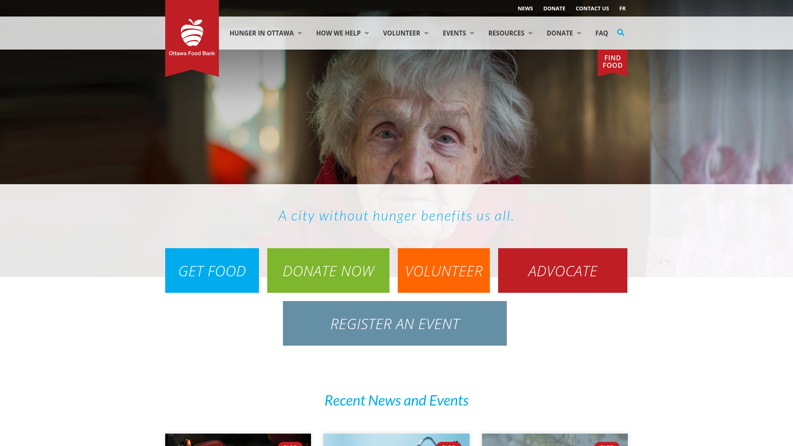
Non-Profit
Ottawa Food Bank
Bilingual WordPress platform managing 98 community food programs with donation processing, volunteer registration, event management, and multi-program content organization.
BilingualWPMLElementorGravity FormsGA4
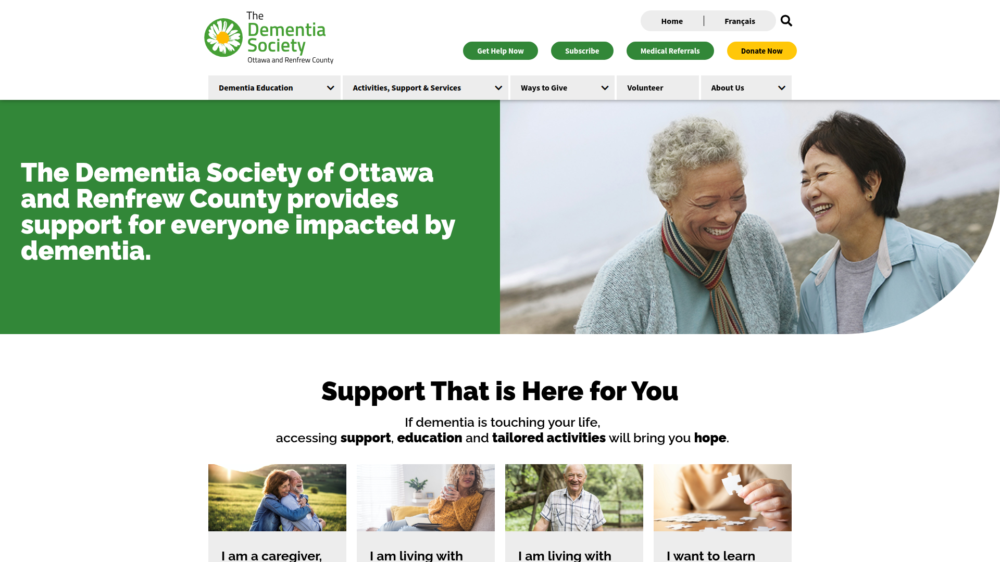
Non-Profit
Dementia Society of Ottawa & Renfrew County
Multi-stream service platform with integrated learning hub (7 bilingual modules), multiple user pathways for caregivers, patients, and professionals, plus event and donation management.
BilingualLMSElementorMulti-audience
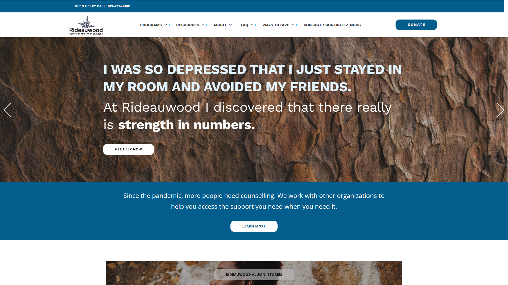
Non-Profit
Rideauwood Addiction & Family Services
15+ program service directory with audience-specific pathways (youth, adults, families), client testimonial archive, strategic document library, and crisis support integration.
Multi-programAudience routingDocument library
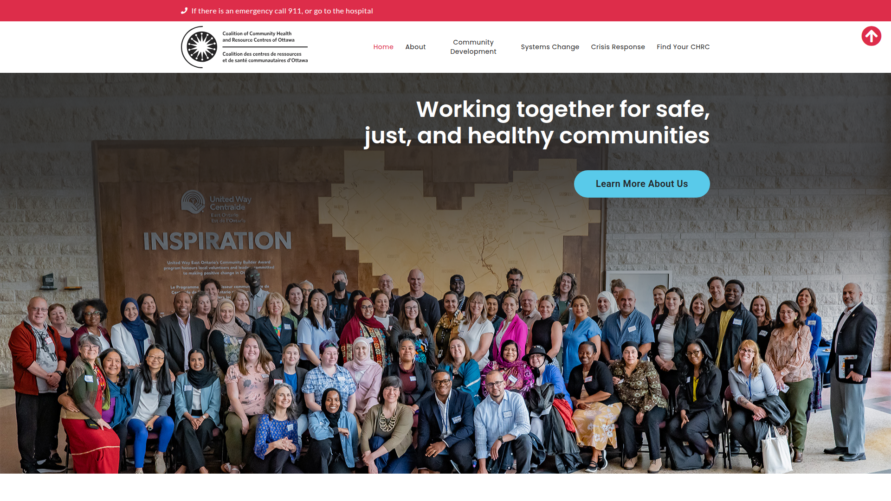
Non-Profit
Coalition of Community Health & Resource Centres
Network of 13 member organizations consolidated into a single platform with geographic service mapping, collective impact messaging, and distinct member identity preservation.
Multi-orgService mappingElementor
Non-Profit
Ilisaqsivik Society
Inuit-led community development organization with three program pillars, bilingual (EN/Inuktitut) via WPML, culturally responsive design, and community-centered content workflows.
BilingualWPMLIndigenousCommunity
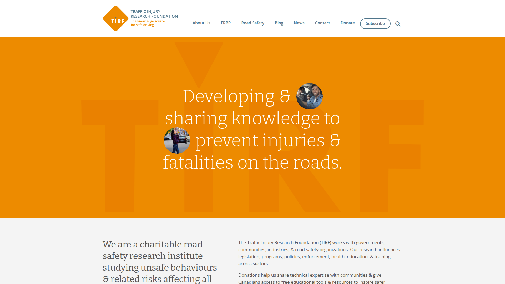
Non-Profit
Traffic Injury Research Foundation
National research non-profit with extensive educational resource library, downloadable publications, bilingual content architecture, and government/industry stakeholder engagement.
BilingualResearchResource libraryNational
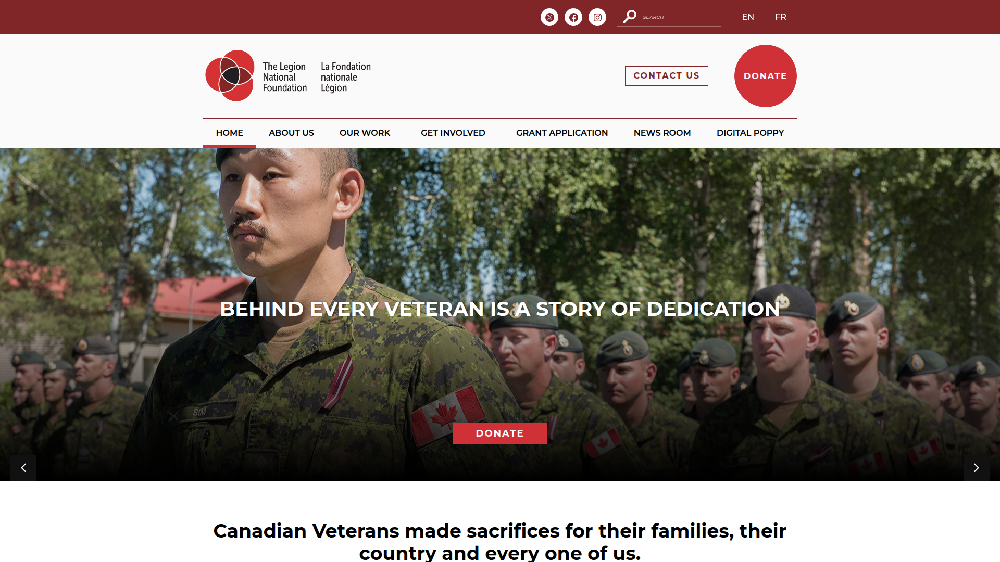
Non-Profit
The Legion National Foundation
National veteran support foundation with multiple program areas, donation processing, impact storytelling, and content management for grants, scholarships, and wellness initiatives.
NationalMulti-programDonationsElementor
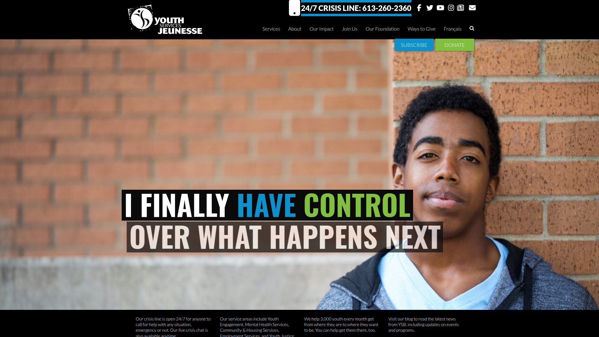
Non-Profit
Youth Services Bureau (YSB)
Bilingual youth services platform managing 21 locations, multiple service streams, WPML implementation, crisis support integration, employment opportunities, and community impact reporting.
BilingualWPMLMulti-location21 sites
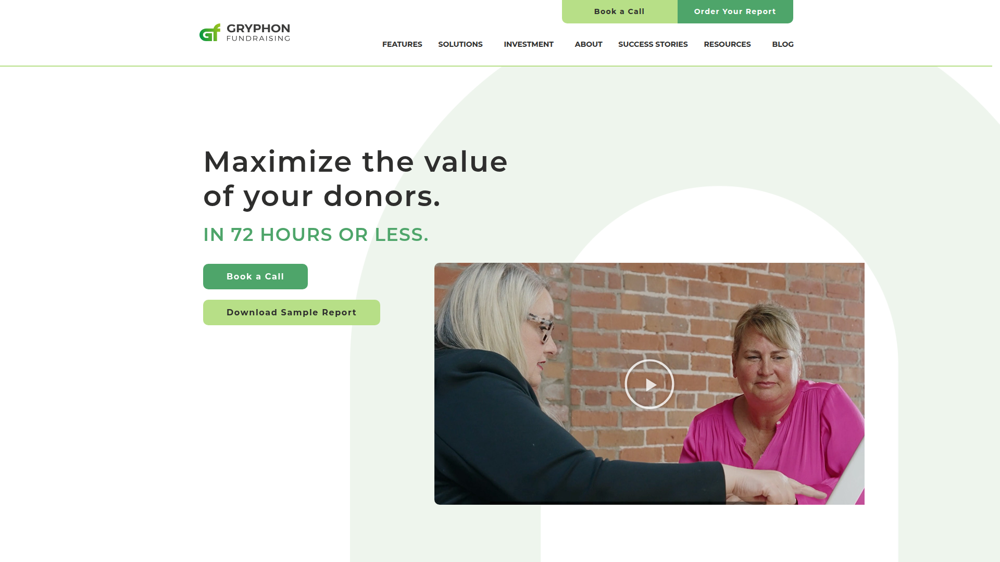
Non-Profit Services
Gryphon Fundraising
B2B fundraising solutions platform with sophisticated UX, video integration, clean information architecture, and clear service/product categorization for non-profit sector clients.
ElementorVideoB2B UX
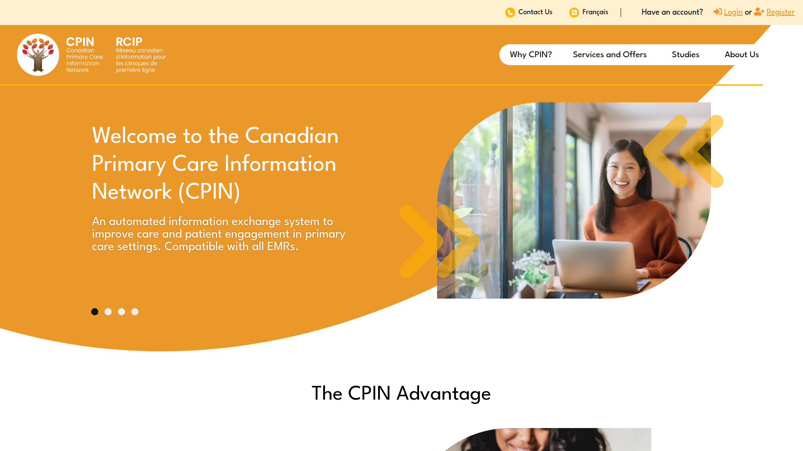
Healthcare Tech
Canadian Primary Care Information Network
Healthcare SaaS platform with EMR-compatible automated communications, member portal integration, bilingual architecture, and patient engagement data collection tools.
BilingualSaaSMember portalHealthcare
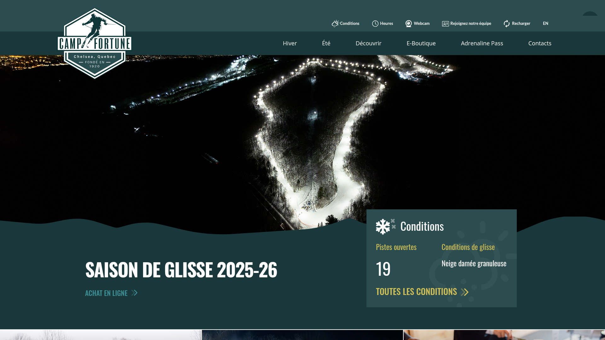
Tourism & Recreation
Camp Fortune
Bilingual (EN/FR) tourism platform with WPML, seasonal content management, e-commerce integration, event scheduling, and complex multi-activity information architecture.
BilingualWPMLE-commerceSeasonal
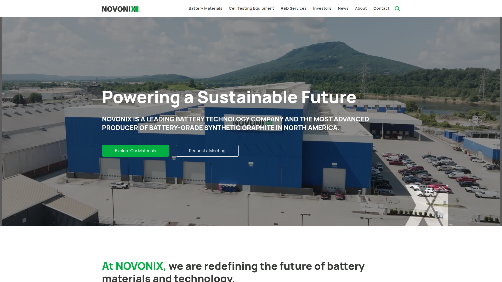
Technology
NOVONIX
NASDAQ-listed battery technology company with investor relations portal, product documentation, career integration, news/media centre, and multi-regional content management.
CorporateInvestor relationsGlobalElementor
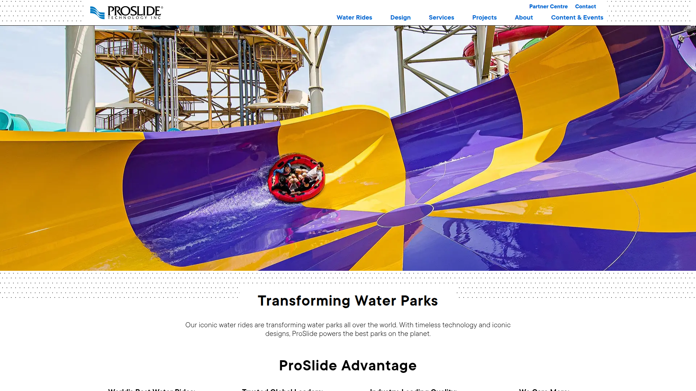
Global Enterprise
ProSlide Technology
Global water ride technology leader with 39 years of innovation. WordPress + Elementor + WPML platform with product catalogs, project portfolios, video libraries, and multilingual content delivery.
WordPressElementorWPMLGlobalWP Engine
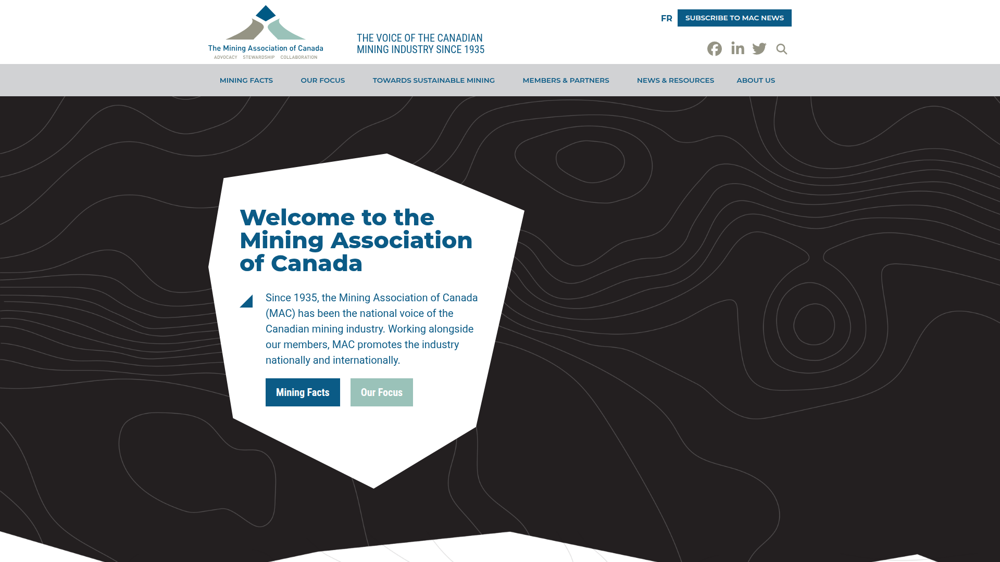
National Association
Mining Association of Canada
Canada's national mining industry voice since 1935. Bilingual WordPress + WPML platform with extensive resource library, multi-stakeholder content, and TSM initiative reporting framework.
BilingualWPMLNationalResource libraryElementor
Education & Research
U15 Canada
Association of Canada's 15 leading research universities — a consolidation project. Bilingual WPML platform with data-driven impact visualization, policy publishing, and member-entity content architecture.
ConsolidationBilingualWPMLNationalData-driven
Relevance to RHF Project
Next Steps
Ready to Move Forward
From scope alignment to launch — here's what the path looks like from here.
1Align on Scope
Attention Strategy + Inkline review this document together, refine scope boundaries, and confirm the responsibility split for each deliverable.
2Finalize Pricing
Convert hourly estimates into package-based deliverables. Structure pricing to give RHF clarity on costs per phase with no surprises.
3Submit Joint Proposal
Final proposal submitted by March 2, 2026 as a unified Attention Strategy + Inkline submission addressing all §4.0 and §5.0 requirements.
4Salesforce Discovery First
If selected, the first action is a deep-dive into RHF's Salesforce environment — mapping current objects, fields, and workflows to inform the form and CRM integration architecture.
5Begin CPT Architecture in Parallel
While Attention Strategy leads discovery and design, Inkline begins building the custom post type data model, taxonomy structure, and ACF field groups — so the technical foundation is ready the moment design approvals land. This parallel-track approach is how we compress an ambitious timeline without cutting corners.